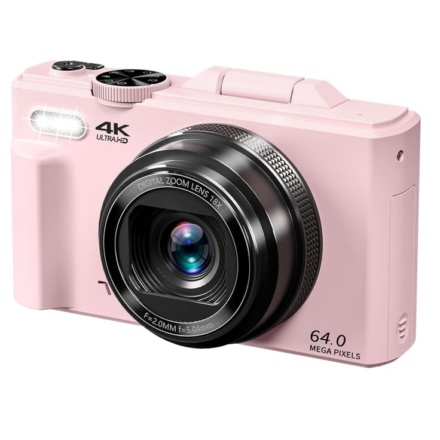

La photographie numérique capture la lumière via un capteur photosensible (photosites) qui convertit les photons en signaux électriques, générant une image composée de pixels (données binaires RVB). Née dans les années 70, elle permet de visualiser, stocker, retoucher et partager instantanément des images
LES FORMAT IMAGES
Source : Wikipédia